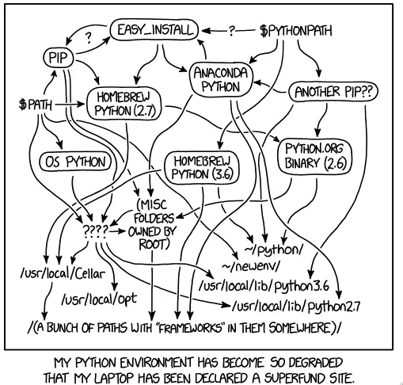

0.7309138357390432Python Notes
CSCI 4511 Fall 2024
Modules and Imports
Virtual Environments
You probably know this:
and this1
1 It might not run if you don’t have scipy installed, so install scipy.
import numpy as np
import pandas as pd
from scipy import stats
a = stats.uniform(1, 5)
print(a)
print(a.cdf(2), a.cdf(3), a.cdf(5))<scipy.stats._distn_infrastructure.rv_continuous_frozen object at 0x7a8474214770>
0.2 0.4 0.8Where do imports come from? The environment. There’s a default environment; but for any complicated project, you’ll want to create your own. You can call it whatever you want. .venv works. You could call it otis. You should call it something meaningful.
At the command line:2
2 Your install might use python3 instead of python
python -m venv otis
cd otis; tree | head -n 172.
├── bin
│ ├── activate
│ ├── activate.csh
│ ├── activate.fish
│ ├── Activate.ps1
│ ├── pip
│ ├── pip3
│ ├── pip3.11
│ ├── python -> /home/adsr/miniconda3/bin/python
│ ├── python3 -> python
│ └── python3.11 -> python
├── include
│ └── python3.11
├── lib
│ └── python3.11
│ └── site-packagesMake a new environment for every project! Or don’t, and find out what happens:

There are several package managers for python, poetry and conda are the most popular3 as of 2024. You can use pip, it’s fine.
3 My own assertion, no data to back this up, probably true.
Modules
When you make a .py file with any definitions, it’s called a module, and the module name is the file name (before the .py extension).
Consider this module:
utils.py
We can import it from any script in the same folder:
We can also import component definitions:
['bruce', 'carl', 'otis'] <class 'str'>Python doesn’t enforce type hints 🙃
Classes
Python has excellent support for objects (classes), even though they aren’t necessary for basic scripts.
The __init__ function is the constructor. We’ll try to unpack what happens below:
- The constructor is defined as
__init__but is called with the class name - We overrode
__str__so that printing aNodeprints itsstatevariable - We reassigned
ato an integer, 3 bstill has a valid.parentreference!
References?
Surely you are aware that Python doesn’t have pointers.
…Python doesn’t have pointers in the sense that it does not have pointers that directly reference locations in memory. Python does have references, which point to objects in namespaces, and they are simultaneously extremely useful and extremely confusing. 🙃
- Primitive/immutable types are assigned ‘directly’
- Objects are assigned as references
To illustrate:
Ints are immutable (so are floats and strings) \(\rightarrow\) assignment is to the value
Lists are objects \(\rightarrow\) assignment is a reference
Tuples are immutable \(\rightarrow\) assignment is to the value
Tuples also allow multiple assignment:
Dicts are objects \(\rightarrow\) assignment is a reference
Strings are immutable \(\rightarrow\) assignment is to the value
- If you want to just access the values of a list or dict, but not the object as a reference, use
copy.deepcopy
Hashing
Anything that’s immutable can be hashed (can be the key of a dict):
Looping
Python has several ways to loop through things and many of them can be cursed. TL;DR, use enumerate.
cat 0 - dog 1 - owl 2 - Looping directly through a dict iterates over keys:4
4 Note the f-string
carl:5 - otis:6 - alan:2 - You can also iterate over the values:
Or the items:
Functions as References
Functions are objects, too.
Recall:
utils.py
<function stringify at 0x7a84b2d07b00>'[1, 4, 5]'We can pass them as arguments:
Comprehensions
They start out kind of cute
They rapidly become kind of cursed and unreadable:
Dict comprehensions exist:
Don’t 🏌️